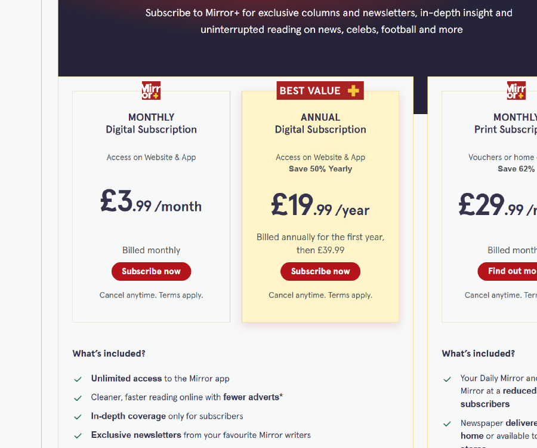
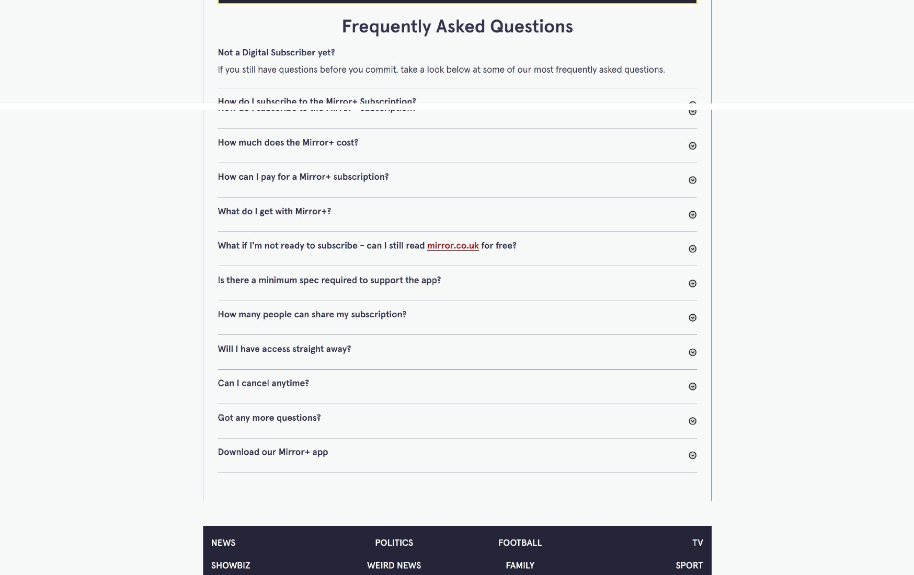
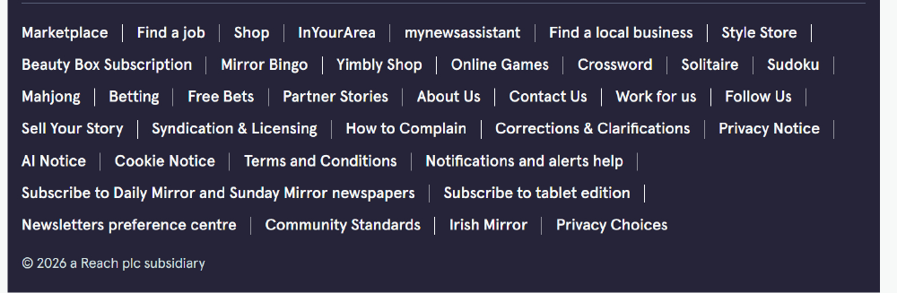
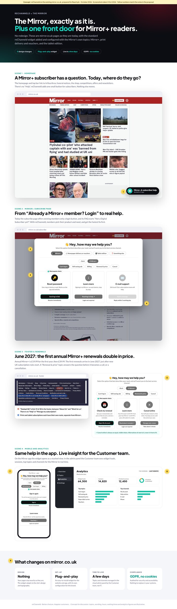
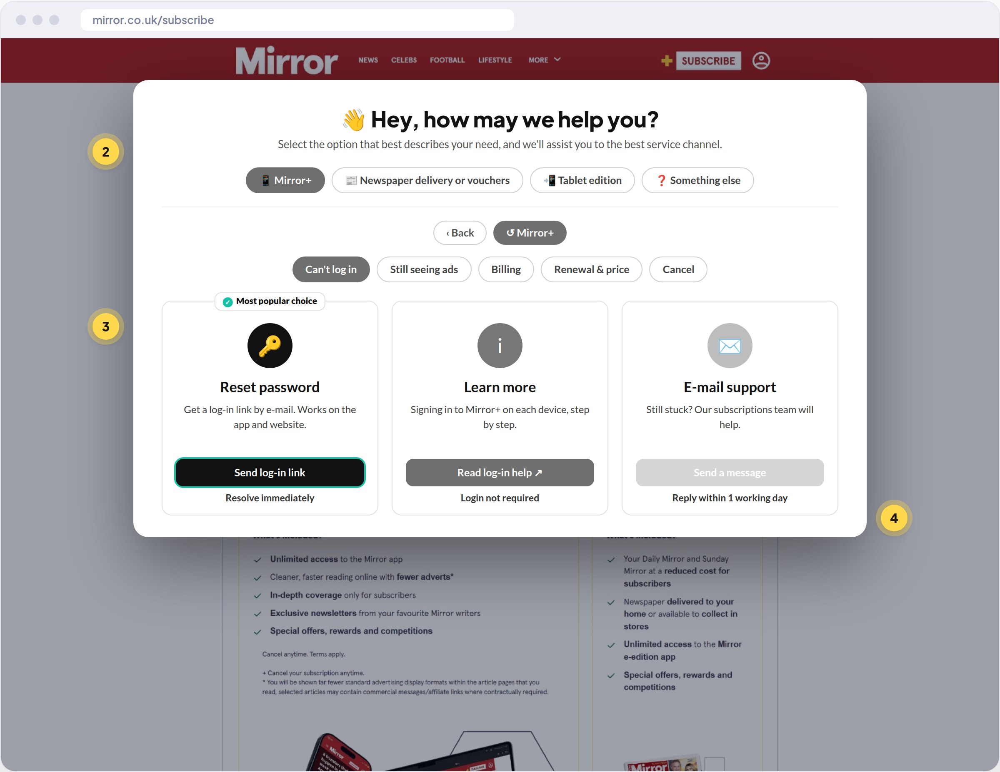
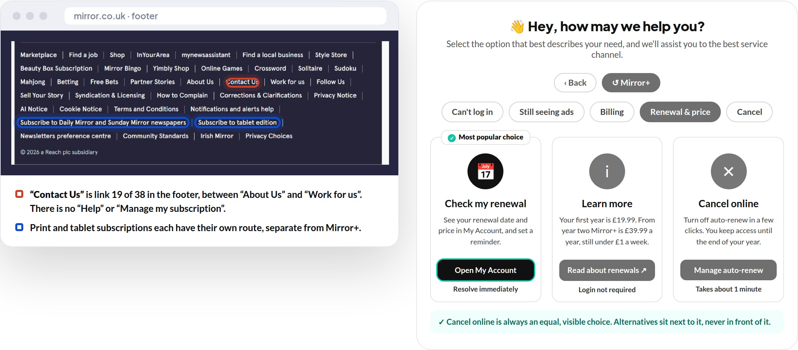
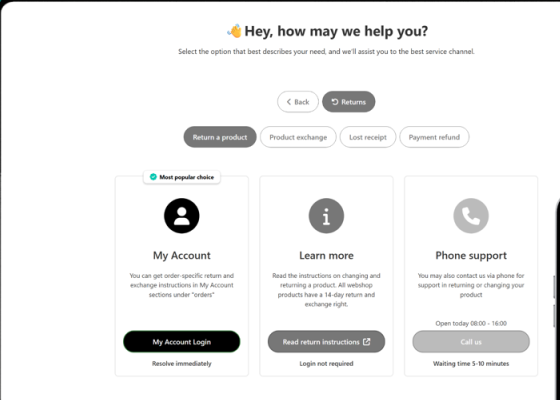

RECHANNELDPrepared for The Mirror · Reach plc · October 2026
Mirror+ & subscriber help · review, concept & business case
Every Mirror+ reader, to the right place, first time.
How one reChanneld front door on mirror.co.uk can support Mirror+ members and print subscribers, get ready for the first annual renewals in June 2027, and serve as the template for every Reach brand.
Four months after launch, Mirror+ is one of the most visible parts of Reach's subscription push: the fourth national brand behind a paywall, at £3.99 a month or £19.99 for the first year. Every new member is a customer who will, sooner or later, need help.
We looked at mirror.co.uk as a Mirror+ member would. There is no “Help” in the navigation. “Contact Us” is link 19 of 38 in the footer. The subscribe page offers existing members only a login button, and its FAQ is written for people who haven't subscribed yet. Print and tablet subscriptions each have their own separate route.
Meanwhile the first annual Mirror+ renewals arrive in June 2027, when the price doubles to £39.99, just after the new UK subscription rules take effect in January 2027.
reChanneld is a channel-strategy platform from Helsinki. Its plug-and-play widget asks readers what they need and shows the best channel for it: self-service first, with honest opening hours and waiting times. It sits on top of the pages and systems you already have.
This pack contains:
1
Audit
mirror.co.uk reviewed as a Mirror+ member: 8 findings and a scorecard.
2
Concept
The real reChanneld widget on mirror.co.uk, configured with The Mirror's own topics. Nothing redesigned.
3
Business case
Renewal timing, the 2027 rules, a value model and an 8-week pilot on the Mirror.
We'd welcome 20 minutes with you or the subscriptions team to walk through it.
Kind regards,
Touko Laakkonen
Service Channel Strategy, reChanneld · [e-mail] · [phone]
RECHANNELD · for The Mirror (Reach plc)2
02 · The Mirror today
A national brand learning to be a subscription business
One of the UK's biggest news brands is moving from reach to recurring revenue, at a moment when search traffic is falling and every subscriber counts.
20.7 Mmonthly audience (June 2025, Ipsos iris via Press Gazette)
Jun 2026Mirror+ launched: Reach's 15th paywall, 4th national
£3.99a month, or £19.99 for year one, then £39.99
£29.99a month for print by vouchers or home delivery (“save 62%”)
Timeline
2025Google Discover referrals to Reach fall by almost half in the second half of the year.
Early 2026Chloe Hubbard, from The Independent, becomes Mirror editor-in-chief.
Jun 2026Mirror+ launches with an ad-lite app, exclusive columns, newsletters and offers.
Aug 2026Reach passes 50,000 digital subscribers. Mirror North opens in Manchester.
Jun 2027First annual Mirror+ renewals, at £39.99 instead of £19.99.
What this means for subscriber help
A new kind of customer. Mirror+ members ask about log-in, ads, billing and renewal, questions the print business never had.
Three products, three routes. Mirror+, print (vouchers or home delivery) and the tablet edition are sold and supported separately.
A renewal price step. Doubling from £19.99 to £39.99 is fair value, but needs explaining before members decide to leave.
Print readers still matter. Many still prefer the phone, so honest phone routes stay in the mix.
The opportunity: give Mirror+ members a clear front door before the first renewals in June 2027.
Sources: Press Gazette (Mirror+ launch, Jun 2026; audience data), InPublishing, Reach results and announcements; mirror.co.uk subscribe page (3 Oct 2026).
RECHANNELD · for The Mirror (Reach plc)3
03 · Subscriber journey audit
mirror.co.uk, seen by a Mirror+ member
Screenshots taken on 3 October 2026.

Subscribe page. Clear offers: £3.99 a month, or £19.99 for the first year, “then £39.99”.

FAQ. Ten questions, all for people who haven't subscribed yet. Existing members get a login button.

Footer. 38 links, from Mirror Bingo to Mahjong. “Contact Us” is the 19th. Print and tablet subscriptions have their own links. No “Help” or “Manage my subscription”.
RECHANNELD · for The Mirror (Reach plc)4
03 · Subscriber journey audit, continued
8 findings
2/10Finding help
3/10Help for members
4/10Renewal clarity
5/10Print routes
8/10Offer clarity
01
No “Help” anywhere in the navigation Critical
The top bar serves InYourArea, funeral notices, shop, competitions, offers, newsletters and social. Help is missing.
A “Mirror+ & subscriber help” button on every page, opening the widget.
02
“Contact Us” is link 19 of 38 in the footer Critical
Members have to scroll past games, betting and shopping links to find it.
Footer links stay as they are; “Contact Us” opens the widget instead of a generic page.
03
Existing members get only a login button High
“Already a Mirror+ member? Login” is the only route on the subscribe page.
A members' topic list: log-in, ads, billing, renewal, cancel.
04
The FAQ is written for non-subscribers High
It opens with “Not a Digital Subscriber yet?”. None of its ten questions covers log-in problems or ads still showing.
Member questions answered by the widget, with the FAQ kept for prospects.
05
Renewal doubles the price in June 2027 High
£19.99 for year one, then £39.99. Fair, but a classic moment for “why did I pay more?” and cancellations.
A “Renewal & price” topic linked from the reminder e-mail.
06
Three products, three separate routes Medium
Mirror+, print (vouchers, home delivery) and the tablet edition each have their own subscribe link.
One first question: “Which subscription do you have?”
07
“Still seeing ads” will be a top question Medium
Ad-lite only works when the member is signed in on that device, which is easy to miss.
Answer it in the app with “Sign in again”.
08
No view of what members need Low
With routes spread across pages and inboxes, nobody sees the full picture.
reChanneld analytics: topics and channels in real time.
Reviewed on mirror.co.uk on 3 October 2026. Scores are our view.
RECHANNELD · for The Mirror (Reach plc)5
04 · reChanneld on mirror.co.uk

Your pages, exactly as they are. Plus one front door.
Screenshots of mirror.co.uk as it is today, with the standard reChanneld widget added and configured with The Mirror's own topics. The full page is in reChanneld-Mirror-Concept.pdf, and each yellow number matches a note below.
1
“Mirror+ & subscriber help” button on mirror.co.uk. The homepage stays as it is. Finding 01.
2
First question: which subscription? Mirror+, newspaper delivery or vouchers, tablet edition, or something else. Finding 06.
3
Members' topics. Can't log in, still seeing ads, billing, renewal & price, cancel. Findings 03 and 04.
4
“Most popular choice”. Self-service first, e.g. “Send log-in link”, marked “Resolve immediately”.
5
Footer evidence. “Contact Us” is link 19 of 38; print and tablet have separate links. Finding 02.
6
Renewal & price. Explains £19.99 → £39.99 before June 2027, with cancel online as an equal choice. Finding 05.
7
In the app. “Still seeing ads” → “Sign in again”. Finding 07.
8
Analytics. Widget loads, sessions, top topics and channels for the Mirror. Finding 08.
9
What changes: no design changes, plug-and-play, live in a few days, GDPR compliant with no cookies.
Why no redesign
mirror.co.uk is a high-traffic news site built for advertising and audience. reChanneld doesn't compete with it: it adds the missing member path on top, so it can go live in days.
RECHANNELD · for The Mirror (Reach plc)6
04 · Before and after
The same pages, a very different experience

Subscribe page with the widget open: Mirror+ → Can't log in → Send log-in link

Footer evidence, and a Renewal & price topic ready for June 2027
RECHANNELD · for The Mirror (Reach plc)7
05 · Topic map
Proposed starting configuration for The Mirror
First-level topics, sub-topics and the recommended channel for each. Built from public information; in a pilot, your own contact data decides the final structure and wording.
📱 Mirror+
Can't log in Self-service
Still seeing ads Article
Billing My Account
Renewal & price My Account
Cancel Equal choice
📰 Newspaper delivery or vouchers
Paper didn't arrive Self-service
Vouchers Self-service
Payment or price Article → phone
Holiday stop Self-service
Cancel or change Equal choice
📲 Tablet edition
Download or log-in Guide
Billing (app store) Article
Switch to Mirror+ Self-service
❓ Something else
A story or tip Newsdesk form
Complaint or correction How to complain
Advertising Reach Solutions
Anything else Contact form
Managed by the Customer team
Topics, texts, buttons, hours and the “Most popular choice” are edited in reChanneld's cloud admin panel and change instantly, without IT tickets or releases.
One template, every Reach brand
The Mirror's configuration can be copied to the Express, Daily Star, Daily Record and every Reach brand, with each brand's own wording and look.
RECHANNELD · for The Mirror (Reach plc)8
06 · Renewals & 2027 rules
June 2027: the first Mirror+ renewals
Annual Mirror+ members pay £19.99 for their first year. From June 2027 their renewal is £39.99. Explaining that step well is the biggest retention lever the Mirror has.
Plan
Year one
Then
First renewals
Mirror+ monthly
£3.99 a month
£3.99 a month
Every month
Mirror+ annual
£19.99
£39.99 a year
From June 2027
Print (vouchers / delivery)
£29.99 a month
As advertised
Every month
UK subscription rules, from January 2027
Easy exit. Consumers can end a contract with a clear statement, without unnecessary steps.
Cooling-off. A 14-day cooling-off period at the start, and again after renewal.
Reminders. Notices before renewals and before a free or discounted period ends.
Summary of the DMCC Act 2024 subscription regime from public guidance, not legal advice.
How the widget helps
Reminder e-mails link to a “Renewal & price” topic, so questions land in self-service, not in the inbox.
Honest options side by side: switch to monthly, check what's included, and cancel online, all as equal choices.
Evidence: analytics show how many readers chose each option, useful for the Customer team and for compliance.
Retention by service, not by friction: members who understand what £39.99 buys renew, and those who want to leave can do so in a minute.
RECHANNELD · for The Mirror (Reach plc)9
07 · Business case
A simple model to fill in together
We don't know The Mirror's subscriber or contact volumes, so this is a worked example per 10,000 subscribers, with clearly stated assumptions. In the first call we'd replace them with real figures.
Per 10,000 subscribers
Example
Contacts per subscriber per year
0.4
Subscriber contacts per year
4,000
Share moved to self-service by nudging
30%
Contacts avoided per year
1,200
Cost per assisted contact (reChanneld's ROI basis: €5)
≈ £4.30
Service saving per year
≈ £5,200
Subscribers kept at renewal (+2 percentage points)
200
Value of a kept subscriber per year (annual plan)
£39.99
Retained revenue per year
≈ £8,000
Where the value comes from
Retention first. At The Mirror's prices, keeping subscribers at renewal is worth more than service savings.
Fewer assisted contacts. Log-in, billing and delivery questions move to self-service.
Faster help for those who call. Shorter queues for complex cases.
Insight. Real-time data on what readers need, for the Customer and product teams.
reChanneld's own benchmark
On reChanneld's published plans, ROI is reached by nudging around 5% of traffic, assuming €5 per contact. Clients typically see 79% of channel selections go to self-service, automation and leads.
Scale: the same configuration can be copied to every Reach subscription brand (25 by October), so the value multiplies across a base heading for 75,000 digital subscribers.
RECHANNELD · for The Mirror (Reach plc)10
07 · 8-week pilot
Prove it on The Mirror, with your own data
Suggested scope: Mirror+ members on mirror.co.uk and the Mirror app, starting well ahead of the June 2027 renewals.
Weeks 1–2Map
Review three months of The Mirror contact reasons, agree topics, channels and wording, and set the baseline. The widget itself can be live within days.
Weeks 3–8Guide
Widget live on mirror.co.uk (subscribe, account and footer “Contact Us”) and in the Mirror app. Wording and recommended channels adjusted weekly from the analytics.
Week 9Decide
Review results together, then copy the configuration to the next Reach brands.
What we'll measure
KPI
How
Member contacts per 1,000 Mirror+ members
Your data, before vs during
Top topics and channels
reChanneld analytics
Finished sessions
reChanneld analytics
Log-in and “ads” contacts
Your data, before vs during
Renewal-topic choices
reChanneld analytics
Mirror+ churn
Your data
Who does what
reChanneld
Configuration, topics and copy
Analytics access and weekly check-ins
Final report and rollout plan
Reach
One Customer-team contact, about 2 hours a week
Contact-reason data and current help links
Adding the widget to the agreed pages
No redesign, no new chatbot and no change to subscription platforms. If it doesn't show results in 8 weeks, you stop.
RECHANNELD · for The Mirror (Reach plc)11
07 · Launch support
“Welcome to Mirror+”: a 40-second onboarding video
Most log-in and “still seeing ads” questions come in a member's first week. A short welcome video in the confirmation e-mail and app shows how to sign in on every device and where to find help.
0:00–0:06➕ “Welcome to Mirror+”
Visual The Mirror+ cross lights up on a phone.
“Welcome to Mirror+. Great to have you.”
0:06–0:16📱💻 Sign in once on each device
Visual Phone, laptop and tablet each show the sign-in.
“Sign in on each device, and fewer ads follow you.”
0:16–0:24✨ Exclusive columns · newsletters
Visual A quick tour of Mirror+ extras.
“Exclusive columns, newsletters and offers, just for members.”
0:24–0:32👋 “Hey, how may we help you?”
Visual The reChanneld widget: Can't log in → Send log-in link.
“Any question? The help button sorts it in seconds.”
0:32–0:36📅 Your plan, your choice
Visual Renewal & price topic.
“Check your renewal or change your plan, any time.”
0:36–0:40Mirror+ Help: one tap away
Visual End card in Mirror red.
“Enjoy your Mirror.”
Formats
9:16 for the app and social, 16:9 for web, plus a GIF and a 15-second cut for e-mails. Captioned throughout.
Where it lives
The Mirror+ confirmation e-mail, the app's first launch, and the help page. A 15-second cut can run before the June 2027 renewal reminders.
RECHANNELD · for The Mirror (Reach plc)12
About reChanneld
Better choices. Happier customers. Lower costs.

The reChanneld widget as it works today: topic, sub-topic, channel cards and the “Most popular choice”.
reChanneld is a channel strategy platform from Helsinki, Finland. A plug-and-play widget uses behavioural economics and digital nudges to guide customers to the best service channel. Customer service teams manage it themselves in a cloud admin panel, and it works on top of their existing website and channels.
4M+annual sessions
79%channel selections to self-service, automation and leads
87%of end users found reChanneld easy and clear
Daysto define and implement a channel strategy
“Within just a few days we were able to nail our service channel strategy with reChanneld. Nudges work excellently, and we offer a far more intuitive experience to our customers than before!”
Teresa Alander, Head of Operations, Lippu.fi (part of CTS Eventim)
Used by
S-Bank, Nets, Lippu.fi, PAM, Sportson, Laurea, Varha and Satakunta wellbeing services county. They cover banking, payments, ticketing, retail, education and the public sector.
Enterprise-ready
Audited for security and accessibility, GDPR compliant, no cookies. White-labelled per brand. Enterprise plan with unlimited admin users and integrations.
Shall we take 20 minutes?
We'd love to hear how The Mirror subscriber help works today, and where it hurts most.
Touko LaakkonenreChanneld · [e-mail] · [phone]
Figures, quote, plans and customer names from rechanneld.com (October 2026).